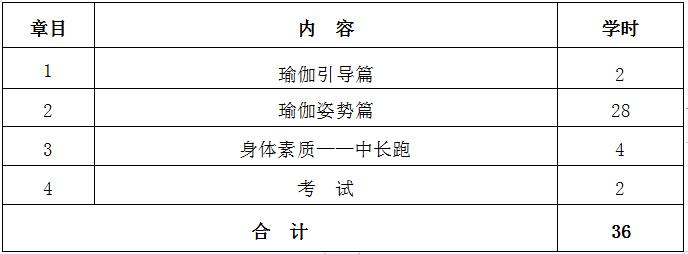
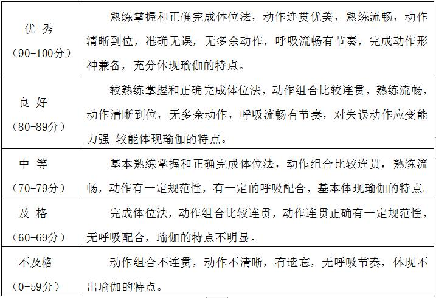

课程管理
|
课程名称 |
公共体育--瑜伽（I） |
课程代码 |
TX031106 |
|
课程类型 |
√通识课 □学科（专业）基础课 □专业发展课 |
课程性质 |
√必修课 □选修课 |
|
开课单位 |
体育学院 |
适用专业 |
非体育专业 |
|
总学时数 |
36 |
周学时数 |
2 |
|
课程学分 |
1 |
编 写 人 |
黎 珍 |
|
编写时间 |
2017.07.20 |
审 批 人 |
刘其龙 |
一、教学目的
瑜伽课程是一门根据学生个体发展需要，面向全体学生开设的体育课程。它以体能、基本动作练习为基础，全面提高身体素质，培养学生心理调整能力，建立人与人之间的相互协作关系，从而树立高尚、乐观的生活态度的一门健身运动课程。本课程教学目的为：
1.本课程通过选择有一定的基本技能要求的常用、实用和经典的瑜伽动作，使学生学习和掌握瑜伽运动的基本知识、技术和技能，提高健康水平和运动能力，全面发展学生身体素质，使学生的思想、机体和精神达到平衡状态，起到塑身强体，修炼身心的目的。
2.使学生掌握健身瑜伽的基本锻炼方法，提高学生的主体意识，激发学生对瑜伽运动的兴趣、爱好，培养终生体育的观念，为终身体育打下基础。
3.通过自身练习的提升和同学之间的协作，从热爱生活、尊重自己、尊重他人的角度出发，在强身健体的同时，学会自我调节，减轻压力，培养和形成良好的体态，增进人们的身体、心智和精神的健康，培养学生的自信心、自控力和耐性。
二、重点与难点
瑜伽基础的体位与姿势、呼吸与调息、冥想与休息术等技术。
三、基本内容与要求
第1章 瑜伽引导篇
1.1 关于瑜伽
1.2 瑜伽呼吸特点及基本方法
1.3 瑜伽练习的注意事项与要求
1.4 瑜伽热身与放松方法介绍
（一）教学目的：了解瑜伽，了解瑜伽的教学方法与主要事项。
（二）重点与难点：瑜伽的呼吸方法。
（三）基本内容：瑜伽教学方法、瑜伽练习的注意事项与要求、瑜伽呼吸基本方法。
第2章 瑜伽姿势篇
2.1 站姿瑜伽
2.2 坐姿瑜伽
2.3 跪姿瑜伽
2.4 卧姿瑜伽
2.5 平衡姿势瑜伽
2.6 倒置姿势瑜伽
（一）教学目的：初步掌握六类初级瑜伽姿势。
（二）重点与难点：六类瑜伽姿势的动作、呼吸和冥想配合。
（三）基本内容：瑜伽的体位及呼吸的配合。
第3章 身体素质——中长跑
3.1 起跑和起跑后的加速
3.2 途中跑、终点跑
3.3 中长跑的呼吸
3.4 全程跑：1000米（男生）、800米（女生）
（一）教学目的：通过教学使学生掌握起跑和起跑后的加速、途中跑、终点跑等中长跑的基本技术，学会正确的呼吸方式，发展耐力素质，进一步增强心肺功能。
（二）重点与难点：途中跑技术；中长跑的呼吸。
（三）基本内容：起跑和起跑后的加速、途中跑、终点跑等基本技术；全程跑。
四、授课内容学时分配
五、成绩考核：
（一）考核方式：现场测试。
本课程考核内容结合本学期教学内容进行。综合成绩＝平时成绩×30%＋考试成绩×70%，其中平时成绩根据考勤、课堂表现进行评分，考试成绩＝技能考核成绩×70%＋身体素质成绩×30%。 身体素质为每学期的必考项目，考试内容为女子800米。
（二）考试内容：专项技能考核、身体素质（女子800米）。
（三）评分标准与方法 ：
1.瑜伽技能考核内容：
（1）考核内容：拜日式：祈祷式--双臂上举式--上体前屈式--骑马式--狗伸展式-- 蛇击式--眼镜蛇伸展式--顶峰式--骑马式--上体前屈式--上臂上举式--祈祷式。
（2）瑜伽技术考核标准
3.身体素质（女子800米）：评分标准见表1。
六、教材与参考书目
（一）使用教材：
[1] 姜桂萍．瑜伽（第1版）．北京：高等教育出版社，2009年7月．
（二）参考书目：
[1] 家庭书架组委会．瑜伽祖本（第1版）．北京：人民体育出版社，2007年7月．
[2] 张惠兰．瑜伽气功与冥想（第1版）．北京：人民体育出版社，2005年6月．
[3] 日知生活编委会．瑜伽练习分步图解（第1版）．上海：上海科学普及出版社，2008年1月．
[4] 杨静．瑜伽大全集（第1版）．长沙：湖南美术出版社，2011年1月．
[5] 李承雅．塑身女王（第1版）．北京：北京科学技术出版社，2010年5月．
[6] 李承雅．塑身女王（第1版）．北京：北京科学技术出版社，2010年5月．
表1 身体素质考核评分标准

注：数据来源于国家学生体质健康标准（2014年修订）。